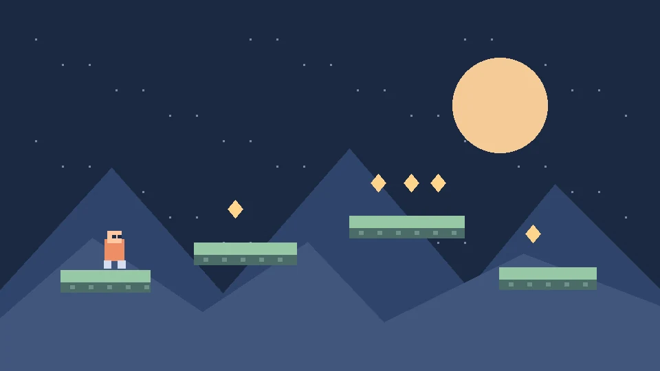
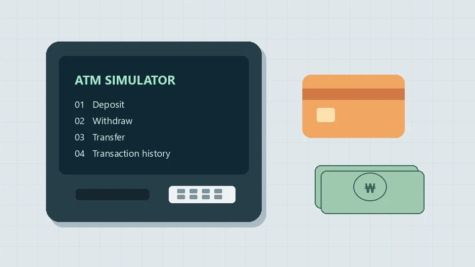
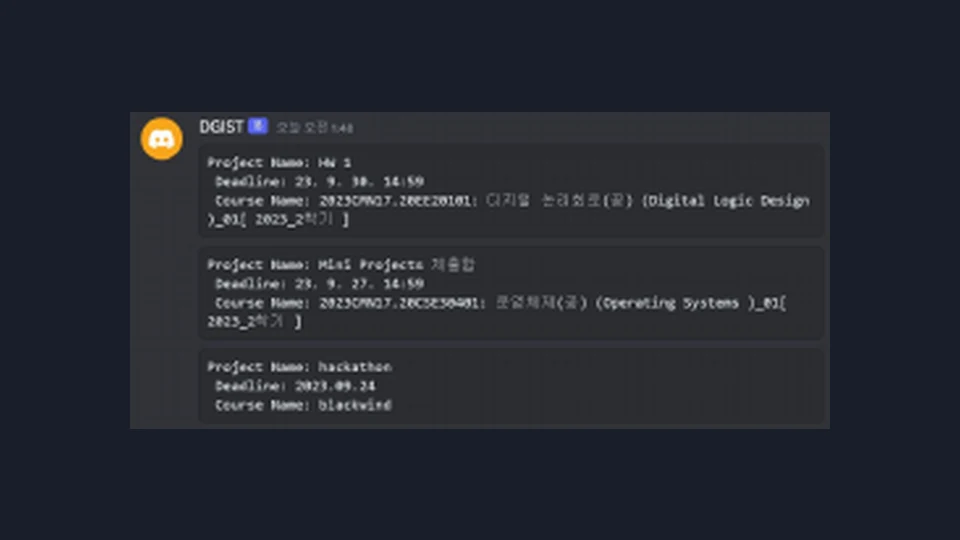
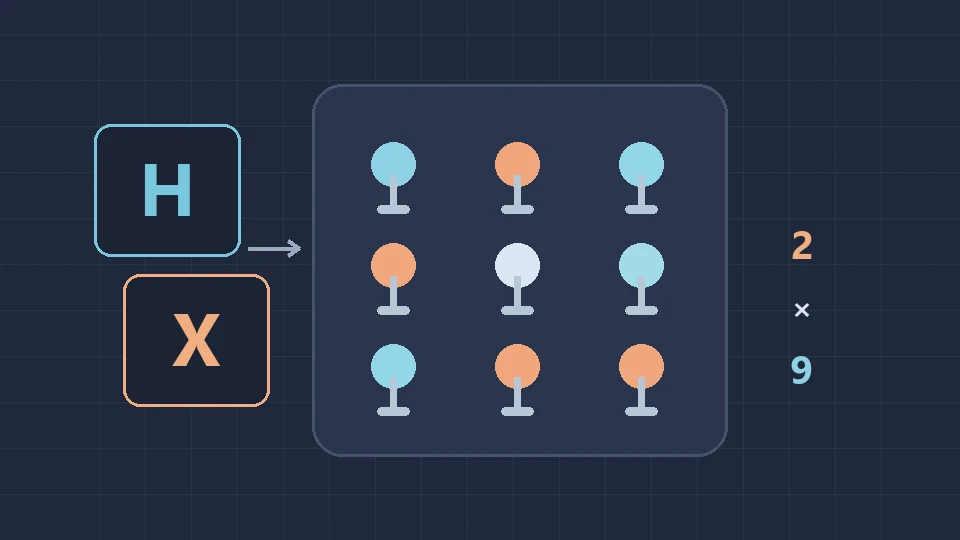
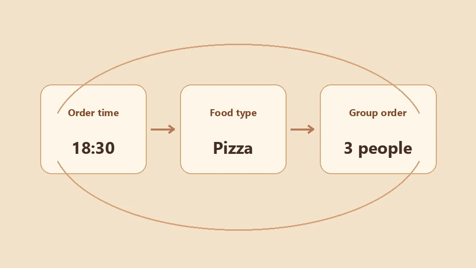
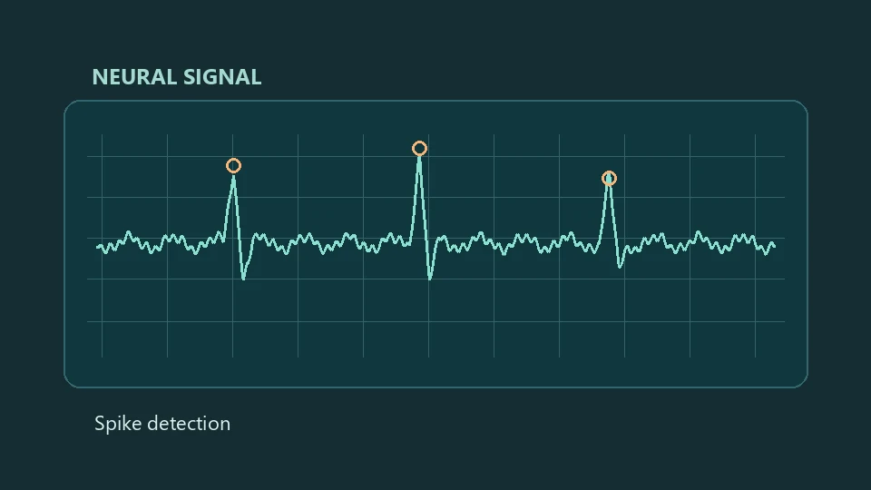
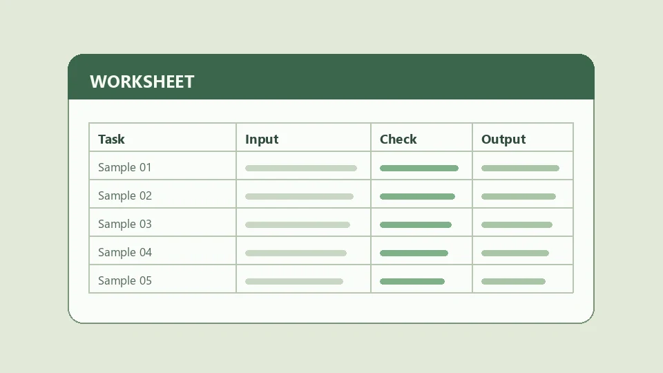
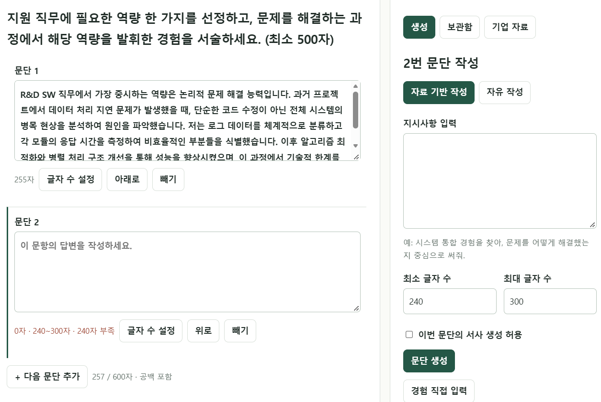

Since 2021 / Game development club
Vodka Games Minigames
I built minigames while studying Unity and Godot with the club. I took part in three campus game jams, including one as an organizer.
Unity, Godot

Since 2021 / Game development club
I built minigames while studying Unity and Godot with the club. I took part in three campus game jams, including one as an organizer.
Unity, Godot

Fall 2022 / Object-oriented programming
A C++ simulator that models banks, accounts, cards, and ATMs as separate classes. It handles deposits and withdrawals and provides a structure for transfers and transaction history.
C++, Visual Studio
GitHub repository
Dec 2022–Jan 2023 / Research internship
I converted C. elegans motion data into motor control signals and used camera input to help the robot avoid obstacles.
Python, Raspberry Pi, camera sensor, 3D printing

/ Startup competition
We pitched an app that helps children practice English pronunciation by repeating lines from videos and getting feedback. As CTO, I assessed the feasibility of using speech analysis to evaluate pronunciation, accent, and expressive delivery.
Pronunciation assessment, accent detection, speech emotion recognition
View presentation (PDF)
Jan–Dec 2023 / Undergraduate research
The game estimates players’ emotions from facial expressions, voice, and pulse waveforms in real time. NPC reactions and story branches change in response. We examined the results through playtests and post-game surveys.
Python, Unity, multiprocessing, signal processing
View research report
Apr–Jun 2023 / Systems programming
A Raspberry Pi-powered LED cube that responds to buttons and a gyro sensor. It supports a dice roll, a piano, and an LED puzzle. We built a Godot simulator to test the cube’s response to inputs.
C, Raspberry Pi, Godot, wiringPi, rpi_ws281x, sockets, CAD, 3D printing
GitHub repository
Aug 2023 / Junction Asia 2023
We turned electronic shelf labels into smart keys for a water park. The prototype used NFC for payments and ride queue registration. We proposed a dashboard for checking device locations after a missing-child report and viewing visitor activity.
NFC, React Native, TypeScript, FastAPI, Next.js
GitHub team repositories
Sep 2023 / Blackwind Hackathon
We built a Chrome extension to simplify repeated campus logins and a Discord assistant for checking notices and assignments from the campus portal and learning management system.
JavaScript, Python, FastAPI, Chrome Extensions, Discord
GitHub team repositories
Fall 2023 / Introduction to Quantum Computing
In this two-player turn-based game, players use quantum gate cards to turn more streetlights their color. We converted the selected gates into quantum circuits and simulated the measurement results.
Godot, GDScript, Python, Qiskit, WebSocket
GitHub repository (access required)
Dec 2023–Jan 2024 / Research internship
I compared approaches to workload allocation under different network and computing constraints, recreated an experiment setup on Jetson TX2, and presented the research methods and findings at a seminar in English.
Jetson TX2, mobile and edge computing

Apr 2024 / Blackwind Ideathon
We designed a service that helps students split delivery costs. Students could match by order time and food preference or join an existing group order.
Service design, order matching

Jul–Aug 2024 / Research internship
I compared EEG, ECoG, LFP, and spike signals, studied how Kilosort4 detects spikes and assigns them to neurons, and presented what I learned at a seminar in English.
Kilosort4, signal processing

Oct 2024–Apr 2026 / Military service
I built and used Excel tools to reduce repetitive administrative work. The improvements earned me additional leave.
Microsoft Excel

/ Team game project
A 3D extraction RPG where players prepare spells and gear at a base, fight through raids, and try to escape with their loot. An online prototype adds matchmaking and synchronizes combat over ENet.
Godot 4, GDScript, ENet
GitHub repository
/ RAG application
A writing app for Korean job applications. It finds relevant excerpts in imported résumés and project reports, uses them to draft cover-letter paragraphs with Ollama, and lets users review the sources before applying the text.
Python, FastAPI, PostgreSQL, pgvector, Ollama